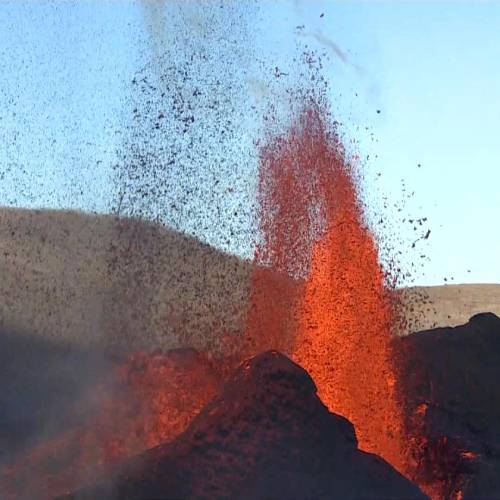

Elsdgos
Geldingadalir eru grunnir dalir eða dældir með breiðri grasflöt á Reykjanesskaga, austan undir Fagradalsfjalli. Að kvöldi 19. mars árið 2021 hófst eldgos úr stuttri sprungu í dölunum, fyrsta eldgosið á Reykjanesskaga í 800 ár.
Saga
Í Geldingadölum var fyrir eldgos þúst eða dys á flötinni og er sagt að þar sé Ísólfur á Skála grafinn, en hann bjó á Ísólfsskála í fornöld. Í örnefnaskrá Hrauns í Grindavík segir að hann hafi látið dysja sig í dalnum.[1] Í Geldingadölum hélt Ísólfur geldingum sínum og öðru geldfé[2][3] [4] Vildi hann vera grafinn, þar sem geldingarnir hans hefðu það best.[5] Athugun Minjastofnunar leiddi í ljós að enginn er grafinn í dysinni sjálfri, enda um náttúrusmíð að ræða, svo líklegt er að hann hafi verið grafinn þar skammt frá.[6] Þess ber að geta að Ísólfur er ekki nefndur í Landnámu og Ísólfsskáli ekki heldur. Sagan um hann er fengin úr örnefnaskrám. Geldingadalir draga nafn sitt af þeirri tilhögun sauðfjárbænda að halda geldfé aðskildu frá ám með lömb vegna mjólkurinnar. Ærnar voru mjólkaðar við fráfærur og þá var mikilvægt að eyða ekki tíma og orku í geldfé því það mjólkar ekki. Í Jónsbók var ákvæði um að geldur peningur skyldi vera farinn úr heimahögum þegar tveir mánuðir væru liðnir af sumri og ekki mátti reka fé aftur heim fyrir tvímánuð (síðustu viku í ágúst) en í réttarbót Eiríks konungs Magnússonar frá 1294 var því breytt þannig að hreppsstjórnarmenn ákváðu hvenær fé yrði rekið á fjall og heim eftir því sem hentaði. [7]